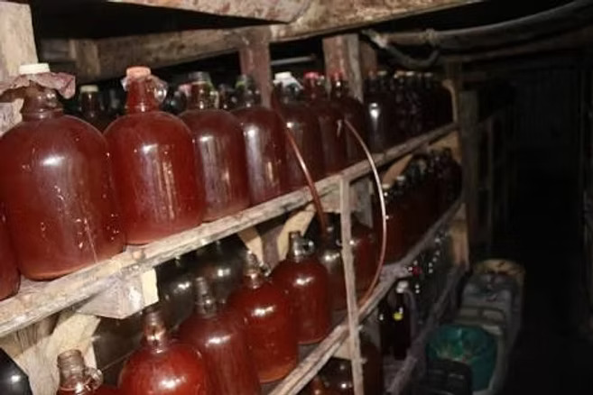
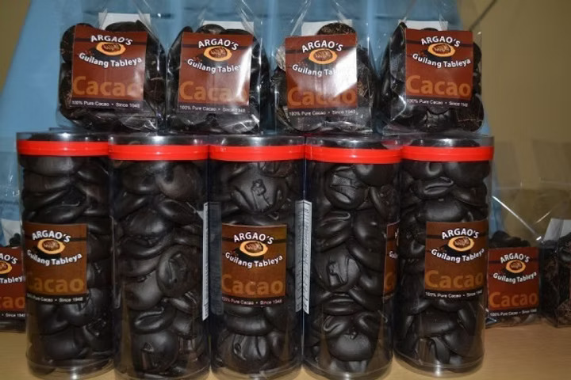
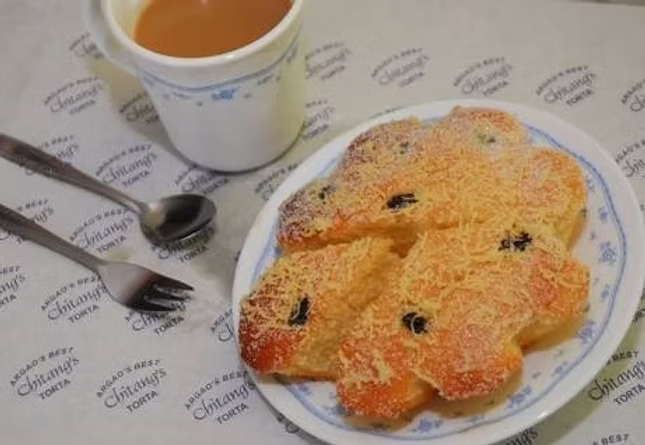

Tourism Products
When Cebuano speak of Argao, they refer in the same breath to the Cebu delicacies "torta" (native sponge cake) and "tableya" (native chocolate) — products of indigenous industries started during or even before the Spanish conquest. Here are the products of Argao.
Hablon
Hablon is a process of weaving using a handloom. It is one of the traditional industries you can find in the town of Argao. The term hablon comes from the Cebuano word for blanket or habol. The same word also means to cover something with a piece of cloth
Torta
The tuba business in Argao started in the 1970’s, even before the Spaniards came in the locality. Tuba is a local wine made from fermented coconut sac. It is made from Sapot Coconut Sac, finely fermented for more than two years. If the coconut wine is still new, we call it tuba. A week later, the tuba now tastes somewhat sweet and we call it bahal. To add a bitter taste to the wine, they add tungog. After a year, we call it Tinuig. The coconut wine contains 12% to 14% alcohol content.
Tableya
Tablea is named after the Spanish word for “tablet” or “plank” due to its tabular appearance. It is created from cacao beans obtained from the fleshy pods of a cacao tree. The origins of tablea-making can be traced as far back as the ancient Mayan Empire and the Spanish colonization of the Americas. The Mayans made it into a beverage known as xocolat, a Nahuatl word that means “bitter water,” and a drink they believed to be of the gods.
Torta
Torta is one of the delicacies that the Queen City of the South is proud of. It comes in a wide variety of cooking styles, sizes, tastes, and presentations, but the torta that comes from Argao is considered the original and most delicious type. Argao’s version is said to be composed of “tuba” or fermented coconut wine. This secret ingredient gives their torta that really tasty flavor, which has become famous among local and international visitors. This cupcake-like pastry is usually large and topped with sugar bits, grated cheese, or raisins. It is best eaten as a snack paired with a hot cup of hot choco or “sikwati”.